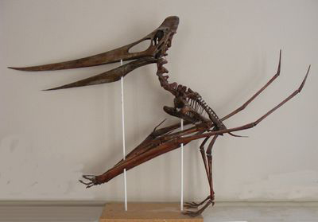

What are Pterodactyls? Well Pterodactyls aren't actually called Pterodactyls. So what are these mysterious creatures? The name was given by the “Father of paleontology” Georges Cuvier. Many people refer to them as Pterodactyls even though their correct/scientific name is Pterosaurs. Most people think that the phrase became more famous through movies. But it seems that overall people, would just rather say Pterodactyl. However you would never hear a paleontologist say Pterodactyl, they would say Pterosaur. I'm sure you have heard of a Pterodactyl but have you ever heard of a Pterosaurs?
Pterodactyls aren't dinosaurs. I know what your thinking, my whole life has been a lie.Well yes, but also no. A lot of people assume they are, because they lived at the same time dinosaurs did and died the same time they did. But this doesn't mean they are dinosaurs. They may look similar to Dinosaurs but they are differnent. To some Paleontologists, that would be like saying an Elephant and a Lizard look the same. But even then nothing looks exactly alike. There are different "breeds" of Pterodactyls. I like to remember them as the overwhelming 110. Yes there are 110 species of Pterodactyl. I know thats a lot, but it also shows how much they evolved from the begining.
One common mistake is that birds are related to Pterodactyls, but that isn't true. Not even all Pterodactyl had feathers. Birds are actually related to Dinosaurs, and since Pterodactyls aren't Dinosaurs, they also aren't related to birds. This sounds weird at first because Birds have wings and most dinosaurs didn't. But lots of dinosaur had feathers like birds, but just didn't fly.

On September 7, 2009 the greatest show in history aired (besides the office). It was called Dinosaur Train. Dinosaur train was about a family of Pterodactyls, that had a t-rex in there family. They went on daily adventures, and dealt with bullies. They helped me deal with my daily struggles in Kindergarten. Helped with problem solving and other issues. The only slightly weird thing about the show is that Pterodactyls weren't dinosaurs. But at that point its possible people still thought pterodactyls were dinosaurs.
This is how big Pterodactyls would be compared to us. They were roughly the size of a jet. In this picture it shows the size of a human compared to the size of a Pterodactyl. It also shows a Giraffe, you wouldn't think a Pterodactyl would be this big. I hope you enjoyed learning about Pterodactyls and that this helped.